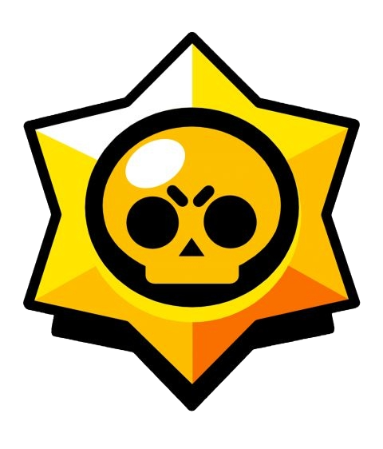
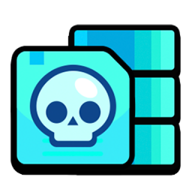
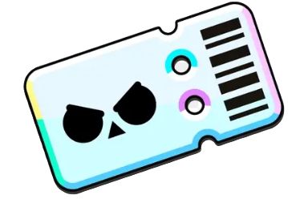
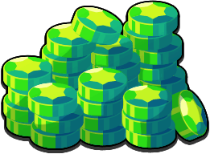

O que é Brawl Stars?
Brawl stars é um jogo 2d onde o jogador controla personagens chamados "Brawlers" que lutam contra outros jogadores, dependendo do mapa escolhido pelo player, a vitória é adquirida de forma diferente. O importante é dar tudo de si para vencer!
Modos de Jogo
Dentro do Brawl Stars temos os modos de jogo, e cada modo de jogo tem sua forma diferente para conquistar a vitória.
Os Brawlers
No jogo, assim como eu havia dito, nós, os jogadores, jogamos com personagens denominados "Brawlers", cada um sua própria mecânica e estilo. Atualmente no Brawl Stars contamos com 82 Brawlers, e sabe o que é mais incível? Nenhum deles é igual a outro, sâo todos diferentes uns dos outros! Tem brawler para todo estilo de jogo: Longa, Curta e Média distância, mais poder de ataque, mais agilidade e por aí vai...
Raridades
Existem raridades para esses Brawlers, sendo que quanto maior é a raridade, mais difícil é de adquirir tal Brawler. Como Raridades temos:
- Raro
- Super-Raro
- Épico
- Mítico
- Lendário
Como Adquiri-los?
Podemos adquirir brawlers de muitas formas, os Brawlers podem ser comprados com gemas, dinheiro real, através de Star Drops, que são caixas adquiridas após vitórias ou eventos, também podemos conseguir esses personagens através do caminho estelar, onde ganhamos vales e após atingirmos certas quantias de vales ganhamos um Brawlers de raridade pré definida.
Vales
Assim como eu disse, os vales são uma das formas de adquirir os Brawlers, o valor de vales para cada raridade de Brawler é:
- Raro = 250 Vales
- Super-Raro = 475 Vales
- Épico = 950 Vales
- Mítico = 1900 Vales
- Lendário = 3800 Vales
Brawl Pass
Como outro método de conseguir os Brawlers, temos o Brawl Pass, que nada mais é do que um Privilégio adquirido por aqueles que pagam dinheiro real dentro do jogo. Temos dois Passes, o Brawl Pass, e o Brawl Pass Plus, Sendo o Brawl Pass 36 reais, e o Plus 55 reais, pelo fato de ser mais caro, o Brawl Pass Plus possui muito mais recompensas do que o Brawl Pass. As recompensas desses passes são: Vales, Gemas, Moedas, Sorteios Star, Emojis Exclusivos e Brawlers. Também há o passe gratuito, porém suas recompensas não contam com nem metade do que há nos Brawl Pass.
Gemas
Como último método para adquirir Brawlers, este é o mais difícil de todos, já que as gemas são um recurso escasso dentro do Brawl Stars, e para juntar um valor de 300 gemas (preço de uma skin) levam-se meses caso não seja gasto nenhuma quantia de dinheiro dentro do jogo. Porém as gemas também são um jeito de conseguir os Brawlers, abaixo estão os preços:
- Raro = 29 Gemas
- Super-Raro = 79 Gemas
- Épico = 169 Gemas
- Mítico = 349 Gemas
- Lendário = 699 Gemas
Melhores Brawlers Para Cada Modo Atual
Agora que terminamos de entender os modos de jogo, que tal darmos uma olhada nos melhores brawlers para cada modo de jogo que ainda está no game?